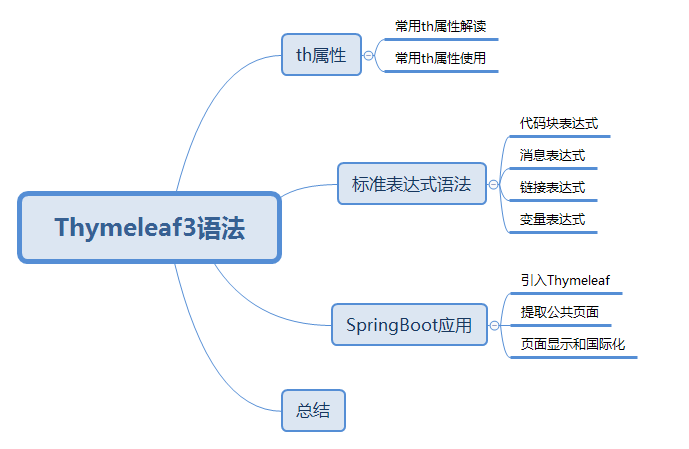

Thymeleaf3语法
文章目录结构

一. th属性
1. 常用th属性解读
html有的属性，Thymeleaf基本都有，而常用的属性大概有七八个。其中th属性执行的优先级从1~8，数字越低优先级越高
1. th:text
设置当前元素的文本内容，相同功能的还有th:utext，两者的区别在于前者不会转义html标签，后者会。优先级不高：order=7
HTML代码
1
2
3<!--th:text 设置当前元素的文本内容，常用，优先级不高-->
<p th:text="${thText}" />
<p th:utext="${thUText}" />后台代码
1
2
3
4
5
6@RequestMapping("thymeleaf")
public String thymeleaf(ModelMap map) {
map.put("thText", "th:text 设置文本内容 <b>加粗</b>");
map.put("thUText", "th:utext 设置文本内容 <b>加粗</b>");
return "grammar/thymeleaf";
}效果如下
1
2th:text 设置文本内容 <b>加粗</b>
th:utext 设置文本内容 加粗
2. th:value
设置当前元素的value值，类似修改指定属性的还有th:src，th:href。优先级不高：order=6
HTML代码
1
2<!--th:value 设置当前元素的value值，常用，优先级仅比th:text高-->
<input type="text" th:value="${thValue}" />后台代码
1
2
3
4
5@RequestMapping("/testThymeleaf")
public String testThymeleaf(ModelMap map){
map.put("thValue", "thValue 设置当前元素的value值");
return prefix+"/testThymeleaf";
}效果如下
1
thValue 设置当前元素的value值
3. th:each
遍历循环元素，和th:text或th:value一起使用。注意该属性修饰的标签位置，详细往后看。优先级很高：order=2
用法1
HTML代码
1
2
3
4
5
6<!--th:each 遍历列表，常用，优先级很高，仅此于代码块的插入-->
<!--th:each 修饰在div上，则div层重复出现，若只想p标签遍历，则修饰在p标签上-->
<div style="background: yellow" th:each="message : ${thEach}">
<!-- 遍历整个div-p，不推荐-->
<p th:text="${message}" />
</div>后台代码
1
2
3
4
5@RequestMapping("/testThymeleaf")
public String testThymeleaf(ModelMap map){
map.put("thEach", Arrays.asList("遍历列表1","遍历列表2","遍历列表3","遍历列表4"));
return prefix+"/testThymeleaf";
}效果如下

用法二（常用,注意th:each标签的位置）
HTML代码
1
2
3
4<div style="background: yellow">
<!--只遍历p，推荐使用-->
<p th:text="${message}" th:each="message : ${thEach}" />
</div>后台代码
1
2
3
4
5@RequestMapping("/testThymeleaf")
public String testThymeleaf(ModelMap map){
map.put("thEach", Arrays.asList("遍历列表1","遍历列表2","遍历列表3","遍历列表4"));
return prefix+"/testThymeleaf";
}效果如下

4. th:if
条件判断，类似的还有th:unless，th:switch，th:case。优先级较高：order=3
HTML代码
1
2
3<!--th:if 条件判断，类似的有th:switch，th:case，优先级仅次于th:each, 其中#strings是变量表达式的内置方法-->
<!--先判断th:if是否成立，，如果不成立就不显示整个P标签-->
<p th:text="${thIf}" th:if="${not #strings.isEmpty(thIf)}"></p>后台代码
1
2
3
4
5@RequestMapping("/testThymeleaf")
public String testThymeleaf(ModelMap map){
map.put("thIf", "我是有内容的");
return prefix+"/testThymeleaf";
}效果如下
1
我是有内容的
5. th:object
声明变量，一般和*{}一起配合使用，达到偷懒的效果。优先级一般：order=4
HTML代码
1
2
3
4
5<!--th:object 声明变量，和*{} 一起使用-->
<div th:object="${thObject}">
<p>对象的id: <span th:text="*{id}" /></p><!--th:text="${thObject.id}"-->
<p>对象的name: <span th:text="*{name}" /></p><!--${thObject.thName}-->
</div>后台代码
1
2
3
4
5
6
7
8@RequestMapping("/testThymeleaf")
public String testThymeleaf(ModelMap map){
TestZk testZk = new TestZk();
testZk.setId(1L);
testZk.setName("wzk");
map.put("thObject", testZk);
return prefix+"/testThymeleaf";
}效果如下
1
2对象的id: 1
对象的name: wzk
二. 常用th属性使用
- 使用Thymeleaf属性需要注意点以下五点：
- 一、若要使用Thymeleaf语法，首先要声明名称空间： xmlns:th=”http://www.thymeleaf.org"
- 二、设置文本内容 th:text，设置input的值 th:value，循环输出 th:each，条件判断 th:if，插入代码块 th:insert，定义代码块 th:fragment，声明变量 th:object
- 三、th:each 的用法需要格外注意，打个比方：如果你要循环一个div中的p标签，则th:each属性必须放在p标签上。若你将th:each属性放在div上，则循环的是将整个div。
- 四、变量表达式中提供了很多的内置方法，该内置方法是用#开头，请不要与#{}消息表达式弄混。
- 五、th:insert，th:replace，th:include 三种插入代码块的效果相似，但区别很大。
二、标准表达式语法
1 | ${...} 变量表达式，Variable Expressions |
变量表达式使用频率最高，其功能也是非常的丰富。所以我们先从简单的代码块表达式开始，然后是消息表达式，再是链接表达式，最后是变量表达式，随带介绍选择变量表达式
1. ~{…} 代码块表达式
支持两种语法结构
1
2
3
4
5
6推荐：~{templatename::fragmentname}
支持：~{templatename::#id}
templatename：模版名，Thymeleaf会根据模版名解析完整路径：/resources/templates/templatename.html，要注意文件的路径。
fragmentname：片段名，Thymeleaf通过th:fragment声明定义代码块，即：th:fragment="fragmentname"
id：HTML的id选择器，使用时要在前面加上#号，不支持class选择器。代码块表达式的使用
- 代码块表达式需要配合th属性（th:insert，th:replace，th:include）一起使用。
- th:insert：将代码块片段整个插入到使用了th:insert的HTML标签中，
- th:replace：将代码块片段整个替换使用了th:replace的HTML标签中，
- th:include：将代码块片段包含的内容插入到使用了th:include的HTML标签中，
- 用一个官方例子来区分三者的不同，第三部分会通过实战再次用到该知识。
1
2
3
4
5
6
7
8
9
10
11
12
13
14
15
16
17
18
19
20
21
22
23
24<!--th:fragment定义代码块标识-->
<footer th:fragment="copy">
内容。。。。。
</footer>
<!--三种不同的引入方式-->
<div th:insert="footer :: copy"></div>
<div th:replace="footer :: copy"></div>
<div th:include="footer :: copy"></div>
<!--th:insert是在div中插入代码块，即多了一层div-->
<div>
<footer>
内容。。。。。
</footer>
</div>
<!--th:replace是将代码块代替当前div，其html结构和之前一致-->
<footer>
内容。。。。。
</footer>
<!--th:include是将代码块footer的内容插入到div中，即少了一层footer-->
<div>
内容。。。。。
</div>
3. #{…} 消息表达式
消息表达式一般用于国际化的场景。结构：th:text=”#{msg}” 。会在第三部分的实战详细介绍。
4. @{…} 链接表达式
链接表达式好处
1
2
3
4
5
6
7不管是静态资源的引用，form表单的请求，凡是链接都可以用@{...} 。这样可以动态获取项目路径，即便项目名变了，依然可以正常访问
修改项目名，链接表达式会自动修改路径，避免资源文件找不到 (等价于 应用的访问路径)
<!--可以不加项目名称,直接用"/"-->
server.context-path = /项目名称
<!--SpirngBoot2.0开启弃用了，改为使用一下参数设置-->
server.servlet.context-path = /项目名称
//可以不填链接表达式结构
无参：@{/xxx}
有参：@{/xxx(k1=v1,k2=v2)} 对应url结构：xxx?k1=v1&k2=v2
引入本地资源：@{/项目本地的资源路径}
引入外部资源：@{/webjars/资源在jar包中的路径}
示例：
1 | //使用ruoyi做例子 |
引用的文件是：

1 | 当设置server.servlet.context-path = / |
5. ${…}变量表达式
变量表达式有丰富的内置方法，使其更强大，更方便。
- 变量表达式功能
- 一、可以获取对象的属性和方法
- 二、可以使用ctx，vars，locale，request，response，session，servletContext内置对象
- 三、可以使用dates，numbers，strings，objects，arrays，lists，sets，maps等内置方法（重点介绍）
常用的内置对象
一、ctx ：上下文对象。
二、vars ：上下文变量。
三、locale：上下文的语言环境。
四、request：（仅在web上下文）的 HttpServletRequest 对象。
五、response：（仅在web上下文）的 HttpServletResponse 对象。
六、session：（仅在web上下文）的 HttpSession 对象。
七、servletContext：（仅在web上下文）的 ServletContext 对象
- 内置对象使用示例
1
2
3
4
5
6<p th:text="${#ctx.#servletContext.getContextPath()}" />
<p th:text="${#vars.#servletContext.getContextPath()}" />
<p th:text="${#request.getContextPath()}" />
<p th:text="${#response.addHeader('headInfo','content')}" />
<p th:text="${#session.getAttribute('mySession')}" />
<p th:text="${#servletContext.getContextPath()}" />
- 内置对象使用示例
常用的内置方法
- 一、strings：字符串格式化方法，常用的Java方法它都有。比如：equals，equalsIgnoreCase，length，trim，toUpperCase，toLowerCase，indexOf，substring，replace，startsWith，endsWith，contains，containsIgnoreCase等
- 二、numbers：数值格式化方法，常用的方法有：formatDecimal等
- 三、bools：布尔方法，常用的方法有：isTrue，isFalse等
- 四、arrays：数组方法，常用的方法有：toArray，length，isEmpty，contains，containsAll等
- 五、lists，sets：集合方法，常用的方法有：toList，size，isEmpty，contains，containsAll，sort等
- 六、maps：对象方法，常用的方法有：size，isEmpty，containsKey，containsValue等
- 七、dates：日期方法，常用的方法有：format，year，month，hour，createNow等
常用内置方法示例
前端代码
1
2
3
4
5
6
7
8
9
10
11
12
13
14
15
16
17
18
19
20
21
22
23
24
25
26
27
28
29
30
31
32
33
34
35
36
37
38
39
40
41
42
43
44
45
46
47
48
49
50
51
52
53
54
55
56
57
58
59
60
61
62
63
64
65
66
67<!DOCTYPE html>
<html lang="en" xmlns:th="http://www.thymeleaf.org">
<head>
<meta charset="UTF-8">
<title>ITDragon Thymeleaf 内置方法</title>
</head>
<body>
<h2>ITDragon Thymeleaf 内置方法</h2>
<h3>#strings </h3>
<div th:if="${not #strings.isEmpty(itdragonStr)}" >
<p>Old Str : <span th:text="${itdragonStr}"/></p>
<p>toUpperCase : <span th:text="${#strings.toUpperCase(itdragonStr)}"/></p>
<p>toLowerCase : <span th:text="${#strings.toLowerCase(itdragonStr)}"/></p>
<p>equals : <span th:text="${#strings.equals(itdragonStr, 'itdragonblog')}"/></p>
<p>equalsIgnoreCase : <span th:text="${#strings.equalsIgnoreCase(itdragonStr, 'itdragonblog')}"/></p>
<p>indexOf : <span th:text="${#strings.indexOf(itdragonStr, 'r')}"/></p>
<p>substring : <span th:text="${#strings.substring(itdragonStr, 2, 8)}"/></p>
<p>replace : <span th:text="${#strings.replace(itdragonStr, 'it', 'IT')}"/></p>
<p>startsWith : <span th:text="${#strings.startsWith(itdragonStr, 'it')}"/></p>
<p>contains : <span th:text="${#strings.contains(itdragonStr, 'IT')}"/></p>
</div>
<h3>#numbers </h3>
<div>
<p>formatDecimal 整数部分随意，小数点后保留两位，四舍五入: <span th:text="${#numbers.formatDecimal(itdragonNum, 0, 2)}"/></p>
<p>formatDecimal 整数部分保留五位数，小数点后保留两位，四舍五入: <span th:text="${#numbers.formatDecimal(itdragonNum, 5, 2)}"/></p>
</div>
<h3>#bools </h3>
<div th:if="${#bools.isTrue(itdragonBool)}">
<p th:text="${itdragonBool}"></p>
</div>
<h3>#arrays </h3>
<div th:if="${not #arrays.isEmpty(itdragonArray)}">
<p>length : <span th:text="${#arrays.length(itdragonArray)}"/></p>
<p>contains : <span th:text="${#arrays.contains(itdragonArray, 5)}"/></p>
<p>containsAll : <span th:text="${#arrays.containsAll(itdragonArray, itdragonArray)}"/></p>
</div>
<h3>#lists </h3>
<div th:if="${not #lists.isEmpty(itdragonList)}">
<p>size : <span th:text="${#lists.size(itdragonList)}"/></p>
<p>contains : <span th:text="${#lists.contains(itdragonList, 0)}"/></p>
<p>sort : <span th:text="${#lists.sort(itdragonList)}"/></p>
</div>
<h3>#maps </h3>
<div th:if="${not #maps.isEmpty(itdragonMap)}">
<p>size : <span th:text="${#maps.size(itdragonMap)}"/></p>
<p>containsKey : <span th:text="${#maps.containsKey(itdragonMap, 'thName')}"/></p>
<p>containsValue : <span th:text="${#maps.containsValue(itdragonMap, '#maps')}"/></p>
</div>
<h3>#dates </h3>
<div>
<p>format : <span th:text="${#dates.format(itdragonDate)}"/></p>
<p>custom format : <span th:text="${#dates.format(itdragonDate, 'yyyy-MM-dd HH:mm:ss')}"/></p>
<p>day : <span th:text="${#dates.day(itdragonDate)}"/></p>
<p>month : <span th:text="${#dates.month(itdragonDate)}"/></p>
<p>monthName : <span th:text="${#dates.monthName(itdragonDate)}"/></p>
<p>year : <span th:text="${#dates.year(itdragonDate)}"/></p>
<p>dayOfWeekName : <span th:text="${#dates.dayOfWeekName(itdragonDate)}"/></p>
<p>hour : <span th:text="${#dates.hour(itdragonDate)}"/></p>
<p>minute : <span th:text="${#dates.minute(itdragonDate)}"/></p>
<p>second : <span th:text="${#dates.second(itdragonDate)}"/></p>
<p>createNow : <span th:text="${#dates.createNow()}"/></p>
</div>
</body>
</html>后端代码
1
2
3
4
5
6
7
8
9
10
11
12
13
14@RequestMapping("varexpressions")
public String varexpressions(ModelMap map) {
map.put("itdragonStr", "itdragonBlog");
map.put("itdragonBool", true);
map.put("itdragonArray", new Integer[]{1,2,3,4});
map.put("itdragonList", Arrays.asList(1,3,2,4,0));
Map itdragonMap = new HashMap();
itdragonMap.put("thName", "${#...}");
itdragonMap.put("desc", "变量表达式内置方法");
map.put("itdragonMap", itdragonMap);
map.put("itdragonDate", new Date());
map.put("itdragonNum", 888.888D);
return "grammar/varexpressions";
}
三. Thymeleaf在SpringBoot应用
Thymeleaf是Spring Boot 官方推荐使用的模版引擎，这也意味着用Thymeleaf比其他模版引擎更简单。
开发步骤：
第一步：引入Thymeleaf依赖。
第二步： 提取公共页面，提高代码的重用性，统一页面风格。
第三步：页面显示和国际化功能
- 引入Thymeleaf
pom.xml 引入Thymeleaf的依赖，并确定其版本1
2
3
4
5<!--引入模版引擎thymeleaf-->
<dependency>
<groupId>org.springframework.boot</groupId>
<artifactId>spring-boot-starter-thymeleaf</artifactId>
</dependency>
四、总结
一、Thymeleaf 是Spring Boot 官方推荐的Java模版引擎框架，其文件扩展名为.html
二、Thymeleaf 几乎支持所有的html属性，用于赋值的th:text和th:value，用于循环遍历的th:each，用于条件判断的th:if
三、Thymeleaf 提供四种标准的表达式，有丰富内置方法的${}，用于国际化的#{}，用于代码插入的~{}，用于处理链接的@{}
四、一定要注意循环遍历的th:each和代码插入的th:insert用法，尽量避免破坏html结构的细节问题
参考文章 https://www.cnblogs.com/itdragon/archive/2018/04/13/8724291.html